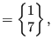
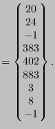

Next: Material description Up: Reading the step input Previous: Mechanical body loads Contents
A set is used to group nodes or elements. In the future, it will also be used to define surface based on nodes and surfaces based on element faces. A set i is characterized by its name set(i) and two pointers istartset(i) and iendset(i) pointing to entries in the one-dimensional field ialset. The name set(i) consists of at most 81 characters, the first eighty of which can be defined by the user. After the last user-defined character the character 'N' is appended for a node set and 'E' for an element set. For surfaces, which are internally treated as sets, these characters are 'S' for nodal surfaces and 'T' for element facial surfaces. The extra character allows the user to choose identical names for node and elements sets and/or surfaces. The nodes or elements a set consists of are stored in field ialset between row istartset(i) and row iendset(i). If the parameter GENERATE was not used in the set definition, the entries in ialset are simply the node or element numbers. If GENERATE is used, e.g.
*NSET,NSET=N1,GENERATE 20,24
the start number, the end number and increment preceded by a minus sign are stored, in that order. Accordingly, for the above example: 20,24,-1. Consequently, a negative number in field ialset always points to an increment to be used between the two preceding entries. For example, if the only two sets are defined by:
*NSET,NSET=N1,GENERATE 20,24 *NSET,NSET=N1 383,402,883 *ELSET,ELSET=N1,GENERATE 3,8
the fields set, istartset, iendset and ialset read:
| set istartset iendset ialset | (782) |